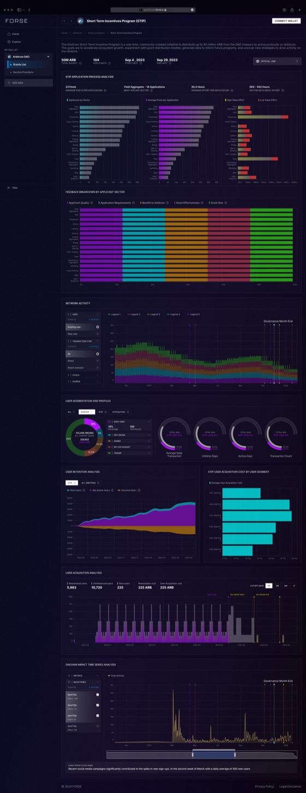
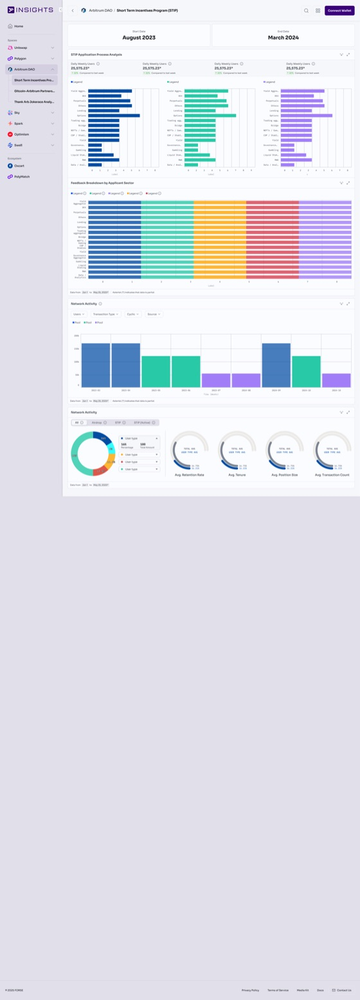
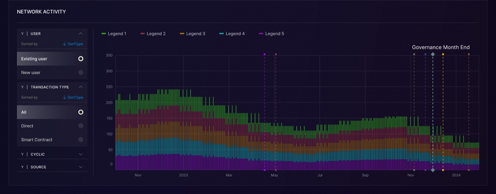
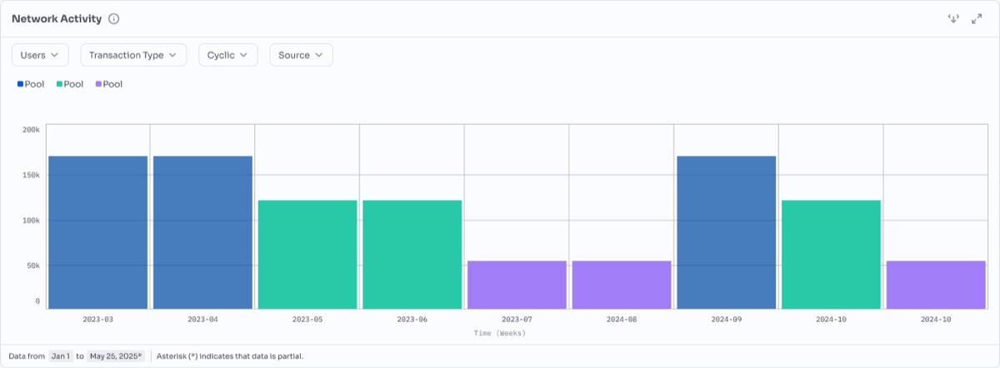
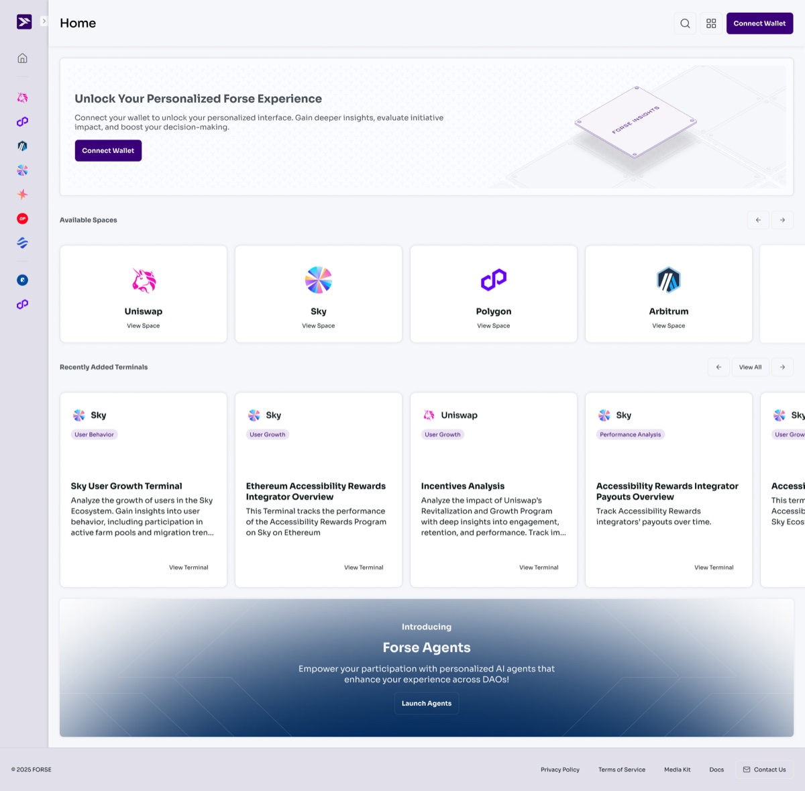
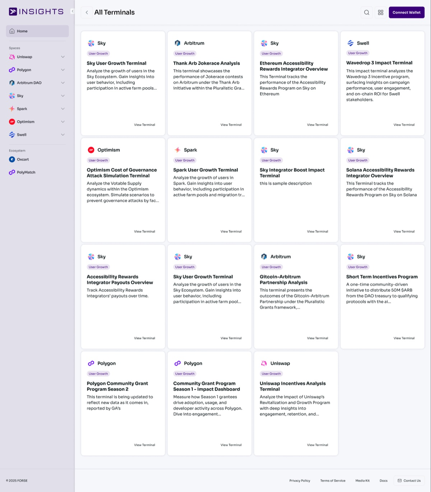
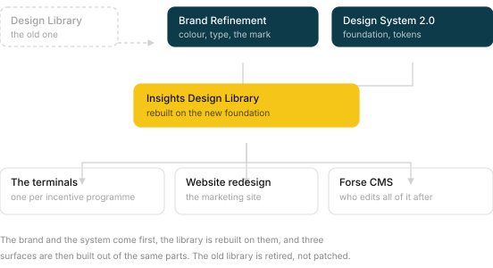
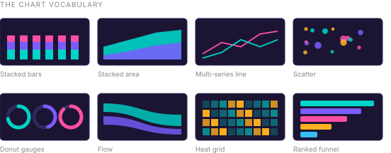

Forse Insights, new version
2025
DAOs hand out millions in incentives and then struggle to say whether it worked. Forse Insights answers that. For version two I took the product out of a dark crypto terminal and rebuilt it as a light system, one chart card at a time.
What the product measures
A DAO votes to spend treasury money on growth. Liquidity incentives, grants, integrator rewards. Months later somebody has to stand up and say what came back. That is the question this product exists to answer, and the answer is never one number.
The sums are not small. Arbitrum’s STIP alone put out more than $175 million in ARB, and Arbitrum has spent around $150 million across programmes since 2023. Across the industry, about 40 percent of grant-funded projects are still active a year later. Most of the money goes to things that quietly stop, and nobody can say which until somebody measures.1
Three kinds of people read the answer. Operations staff who run the pipeline, reviewers who judge applications, and the council or tokenholders who hold the capital. StableLab’s own handbook separates those three roles on purpose, so that nobody both evaluates and pays. The terminals have to serve all three from the same chart.
So I organised the app around programmes rather than around charts. Uniswap incentives. Arbitrum STIP. Gitcoin grants. Sky integrator boost. Solana accessibility rewards. Each one gets its own terminal, and I grouped the terminals by the DAO that paid for the programme.
Out of the dark


Version one, which I had also designed, looked the way analytics products in this market always
look. Near black at #0D0C23, five series colours at full saturation, a lot of glow.
It read as serious to people already inside crypto. It read as impenetrable to everybody else, and
I knew the audience included foundation staff and delegates who have to vote on these numbers
without trading for a living.
A dark terminal signals that you belong to the industry. A light one signals that you expect people from outside it to read your numbers.
I treated version two as a rebuild, not a recolour. White cards on a warm off-white page, three series colours instead of five, and every card carrying the same header, the same controls and the same footer as every other card. I converted STIP first, then Gitcoin, Jokerace and Spark, card by card rather than redrawing from nothing, so the terminals stayed comparable to each other while the rebuild was still half finished.2
One card, and where the controls went


Every terminal is a stack of chart cards, so the card was the real unit of the product and redesigning it was most of my job.
In version one I had put the filter panel inside the card, permanently open, holding a column against the left edge with User, Transaction Type, Cyclic and Source each expanded into a radio list. The chart took whatever was left. In version two I collapsed those same four filters into four labelled dropdowns across the top and gave the plot the full width of the card. The controls are still one click away. They no longer charge every card a column of space whether the reader touches them or not.
Two smaller changes did more than they look. I brought the title out of all caps into sentence
case, which is the difference between a dashboard shouting section names and a document with
headings. And I gave the x axis a unit, Time (Weeks), which version one had left the
reader to work out.
Then I added the line along the bottom. Data from Jan 1 to May 25, 2025*, and
beside it a sentence saying the asterisk means that data is partial.
A chart without a date range is a picture. A chart that states its window, and admits the last of it is incomplete, is evidence.
I put that row on every card in the system. StableLab’s handbook draws a hard line between self-reported updates, independently verifiable evidence and signals fit only for directional learning, and warns that dashboards which blur them create false confidence. I wanted the footer to be that line, printed on the chart. This product’s output gets quoted in governance forums, where somebody screenshots one chart and argues a treasury decision with it. If the window travels with the screenshot, the argument is at least about the same data. Of everything in the redesign, that row is the one I am surest about.
Two jobs, two colours
I took the tokens from the brand refinement file and made the Insights library read from them rather than keep its own copies.
Rules and card borders sit on #D0D1D6. Spacing runs on a four pixel step, space-100 at 4 through space-500 at 24.
The split I cared most about is the third and fourth swatch. The purple is the product’s colour and I never let it appear inside a chart. The blue is the data colour and I never let it appear in the chrome. Use one colour for both and a reader cannot tell a brand flourish from a value, which in an analytics product is not a style problem. It is a reading error.
I took the series palette the same way, from five hues to three.
Version one, sampled off the terminal. #700FA4, #0999A4, #9C6511, #852A3E, #2A991C, on #0D0C23.
Version two. #477DBC, #27C9A7, #A17EF8, on white.
Five series was more than most of these charts asked for, and in a stacked bar forty pixels tall the fifth band and the first were the hardest to hold apart. I settled on three, set at close enough lightness that none of them jumps forward, which covers the comparisons the terminals actually make.3
A front door for fifteen terminals

Version one dropped you straight into a dashboard. That worked while a client had one terminal. It stopped working at fifteen, spread across Uniswap, Polygon, Arbitrum DAO, Sky, Spark, Optimism and Swell, with Oxcart and PolyMatch alongside them in the ecosystem list.
So I gave version two a home. The wallet connect offer sits at the top, then Available Spaces as a row of DAO cards, then Recently Added Terminals, then the Forse Agents banner. Expanding the side nav turns the icon rail into named spaces with their terminals nested underneath, so the same structure is there whether you browse or hunt.

The terminal card was the piece I worked hardest on. It carries the chain logo, a category tag, the title, and a description long enough to be useful to somebody who has never seen this programme before. That last part was my whole argument for the card. Short Term Incentives Program is a name and it tells a newcomer nothing. A one-time community-driven initiative to distribute 50M $ARB from the DAO treasury to qualifying protocols is something a person can decide from before they click.
Six files, one programme

I retired the old design library rather than patching it. I settled brand refinement and the design system foundation first, rebuilt the Insights component library on top of them, and only then drew the surfaces. The terminals are the product and they took most of the effort. The website and its CMS are separate files and a separate job.
Doing it in that order is what made the terminal conversion a sequence of card swaps instead of fifteen redesigns. By the time I rebuilt STIP, the chart card existed as a component, so Gitcoin and Jokerace inherited every decision I had already argued out.
Eight shapes, eight questions

Stacked bars for composition over time. Stacked area for cumulative share. Lines for trend against a comparison. Scatter for the outlier wallet. Gauges for a single ratio against a target. Flow for where the money actually went. A heat grid for density across two dimensions. A ranked funnel for who received the most.
I kept the chart vocabulary intact through the rebuild, because it was never the problem. Eight shapes, each answering a question the others cannot, is more disciplined than the four shapes used eleven ways that most analytics products settle for. What I changed was the card they sit in and the surface that card sits on.
- Figures from chapter one of StableLab’s Forse Grants Handbook, which cites academic research for the survival rate. The handbook is the one public Forse document that outlived the company.
- Converting card by card has a cost worth naming. For a stretch of the rebuild a client could open two terminals and find two different products. The alternative is a long freeze and one big release, which is worse in a product people quote in live governance votes.
- The hex values in both palette rows are sampled from the rendered charts rather than read off a token list, so they are what a reader actually sees, tints and overlays included.